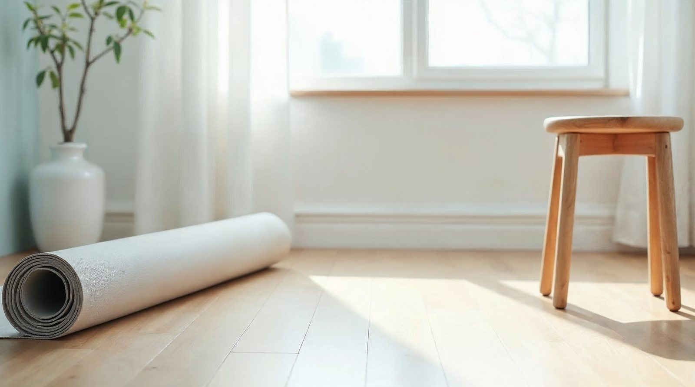
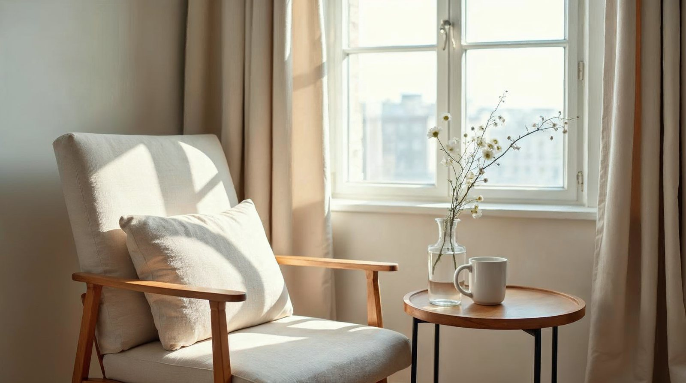

이종호 한의사 감수좋은꿈참사랑한의원 대표원장 (한의사 면허번호 19769)발행 2026-11-26 · 수정 2026-11-26
이 글의 차례
계단을 오르다 엉덩이 옆에서 '툭' 하고 무언가 넘어가는 느낌이 듭니다. 처음에는 대수롭지 않게 넘겼는데, 요가 수업에서 누워 다리를 돌릴 때마다 사타구니 깊은 곳에서 '딱' 소리가 납니다. 옆 사람이 돌아볼 만큼 크게 날 때도 있습니다. 아프지는 않은데 이대로 두어도 괜찮은지 마음이 쓰입니다.
진료실에서 이런 이야기를 들으면 저는 먼저 그 소리를 직접 내 보실 수 있는지 여쭙니다. 어떤 동작에서, 어느 자리에서 소리가 나는지를 함께 확인하면 소리가 어디서 오는지 방향이 꽤 분명해지기 때문입니다.
고관절 주변에서 딱, 툭 하는 소리와 함께 무언가 걸렸다 넘어가는 느낌이 드는 것을 탄발 고관절이라고 부릅니다. 춤, 발레, 요가, 달리기를 하는 분에게 흔하고, 운동을 하지 않는 분에게도 생깁니다. 많은 경우 통증 없이 소리만 나지만, 아픔이 함께 있다면 조금 더 자세히 살펴봅니다.
이 글에서는 소리가 나는 자리에 따라 무엇이 다른지, 왜 생기는지, 아픔이 함께 있을 때 무엇을 확인하는지, 집에서 해 볼 수 있는 것, 한의원에서 함께 살피는 부분을 정리했습니다.

탄발 고관절은 어떤 상태인가요
고관절 주변에는 여러 근육과 힘줄이 뼈의 볼록한 부분 위를 지나갑니다. 다리를 움직이면 이 힘줄이 뼈 위를 미끄러지듯 오가는데, 어떤 이유로 힘줄이 팽팽해지거나 두꺼워지면 볼록한 뼈에 걸렸다가 한꺼번에 넘어가면서 딱 소리와 튕기는 느낌이 납니다.
기타 줄을 손가락으로 튕기는 모습을 떠올리시면 이해가 쉽습니다. 줄이 손가락에 걸렸다가 넘어가는 순간 소리가 나듯, 힘줄이 뼈에 걸렸다 넘어가는 순간 소리가 납니다. 그래서 대부분은 뼈나 관절이 부서지는 소리가 아니라 힘줄이 지나가는 소리입니다.
손가락 관절을 꺾을 때 나는 소리와도 성격이 조금 다릅니다. 손가락 소리는 한 번 나면 한동안 다시 나지 않지만, 탄발 고관절은 같은 동작을 할 때마다 되풀이해서 나는 경우가 많습니다. 소리가 나는 순간 무언가 튕겨 넘어가는 느낌이 손이나 몸으로 전해지는 것도 특징입니다.
소리가 나는 쪽은 한쪽인 경우가 많지만 양쪽에서 모두 나는 분도 계십니다. 양쪽이라면 하루 생활 습관이나 운동 방식처럼 몸 전체에 걸친 이유를 조금 더 살펴봅니다.
소리가 나는 자리에 따라 무엇이 다른가요
탄발 고관절은 소리가 나는 자리에 따라 크게 세 갈래로 나눠 봅니다.
- 엉덩이 바깥쪽, 허벅지 옆 볼록한 뼈 위에서 툭 넘어간다: 바깥쪽 탄발로, 허벅지 옆 두꺼운 띠가 뼈 위를 넘어갈 때 납니다
- 사타구니 깊은 곳에서 누워 다리를 들었다 내릴 때 딱 소리가 난다: 안쪽 탄발로, 고관절 앞을 지나는 깊은 근육의 힘줄이 넘어갈 때 납니다
- 관절 깊숙이 걸리고 찌르는 통증과 함께 다리가 잠기는 느낌이 든다: 관절 안쪽 연골이나 구조의 문제를 함께 살펴야 합니다
바깥쪽 탄발은 손을 엉덩이 옆에 대고 걸으면 넘어가는 느낌이 손에 전해지는 경우가 많습니다. 안쪽 탄발은 눈으로 보이지 않고 소리만 나는 경우가 많아, 누운 자세에서 다리를 구부려 바깥으로 돌렸다가 펴 보면 소리가 나는지 확인할 수 있습니다.
세 번째처럼 관절 안쪽이 걸리고 찌르는 경우는 힘줄 소리와 성격이 다릅니다. 이럴 때는 정형외과에서 영상 검사로 관절 안쪽을 먼저 확인하시길 권합니다.
왜 고관절 주변 힘줄이 걸리게 될까요
가장 흔한 배경은 고관절 주변 근육이 팽팽하게 굳은 것입니다. 오래 앉아 지내면 고관절 앞쪽 근육이 짧아지고, 허벅지 옆 띠는 긴장된 채로 지냅니다. 이 상태에서 다리를 움직이면 힘줄이 뼈 위를 부드럽게 지나가지 못하고 걸리기 쉽습니다.
다리를 크게 반복해서 움직이는 운동도 영향을 줍니다. 발레나 춤처럼 다리를 높이 들고 돌리는 동작, 요가에서 다리를 넓게 여닫는 동작, 오래 달리기처럼 같은 움직임이 수천 번 되풀이되는 운동에서 소리가 생기는 경우가 많습니다.
근육 사이의 균형도 함께 봅니다. 엉덩이 옆 근육이 약해 골반이 흔들리면 허벅지 옆 띠가 그 일을 대신 떠맡아 더 팽팽해집니다. 한쪽 다리에 체중을 싣고 서는 습관, 다리를 꼬고 앉는 습관도 한쪽 고관절 주변을 더 긴장시킵니다.
키가 빠르게 크는 시기의 청소년에게도 잘 생깁니다. 뼈가 길어지는 속도를 근육과 힘줄이 따라가지 못하면 팽팽한 상태가 되기 때문입니다.
소리만 나고 아프지 않으면 괜찮은가요
통증 없이 소리만 나는 경우는 대개 크게 걱정하지 않으셔도 되는 경우가 많습니다. 일부러 소리를 내려고 자꾸 다리를 돌리는 습관만 줄이시면 됩니다. 반복해서 소리를 내면 그 자리가 계속 마찰을 받아 나중에 아픔으로 이어질 수 있습니다.
아픔이 함께 있다면 이야기가 조금 달라집니다. 힘줄이 계속 걸리며 마찰을 받으면 그 아래 있는 점액낭이라는 작은 쿠션 주머니에 염증이 생기기도 합니다. 엉덩이 옆을 누르면 아프고 그쪽으로 돌아눕기 힘들다면 이런 경우를 함께 생각합니다.
그래서 진료실에서는 소리 자체보다 아픔이 있는지, 일상에서 피하게 되는 동작이 생겼는지, 점점 잦아지는지를 기준으로 삼습니다.
집에서 해 볼 수 있는 간단한 확인
소리를 억지로 여러 번 내지 말고, 한두 번만 확인해 보세요. 아프면 바로 멈춥니다.
- 서서 엉덩이 옆에 손을 대고 제자리 걷기를 할 때 넘어가는 느낌이 손에 오는지
- 누워 무릎을 구부린 채 다리를 바깥으로 돌렸다가 천천히 펼 때 사타구니에서 소리가 나는지
- 아픈 쪽으로 돌아누웠을 때 엉덩이 옆이 눌려 아픈지
- 다리를 꼬고 앉거나 양반다리를 할 때 걸리는 느낌이 있는지
소리가 나는 동작을 휴대폰 동영상으로 짧게 찍어 오시면, 진료실에서 같은 소리가 나지 않을 때도 큰 도움이 됩니다.
비슷해 보이는 다른 고관절 증상과는 무엇이 다른가요
고관절 주변의 불편은 여러 가지가 섞여 오기도 해서, 소리 외에 함께 있는 증상을 나눠 봅니다.
- 사타구니 깊은 곳이 시큰하고 양말 신기와 양반다리가 점점 어려워진다: 고관절 퇴행성 변화를 함께 봅니다
- 엉덩이 옆을 누르면 아프고 그쪽으로 눕기 힘들다: 엉덩이 옆 힘줄이나 점액낭 쪽을 함께 봅니다
- 허리에서 시작해 엉덩이와 다리로 저리게 뻗친다: 허리에서 내려오는 통증을 함께 봅니다
- 운동 중 다친 순간 이후 사타구니 안쪽이 당긴다: 허벅지 안쪽 근육 손상을 함께 봅니다
운동은 계속해도 되나요
아프지 않고 소리만 나는 정도라면 대부분 운동을 이어 가셔도 됩니다. 다만 소리가 나는 동작을 일부러 반복하는 것, 다리를 극단적으로 넓게 벌리거나 높이 드는 동작은 조금 줄입니다.
아픔이 함께 있다면 그 동작의 범위와 횟수를 잠시 줄이고, 고관절 주변 근육을 고르게 풀고 기르는 운동으로 바꿉니다. 달리기를 하신다면 거리와 경사를 줄이고, 한쪽으로만 기울어진 길보다 평평한 길을 고르시길 권합니다.
요가나 필라테스를 하신다면 강사 선생님께 소리가 나는 동작을 알려 두세요. 같은 동작이라도 범위를 조금 줄이거나 무릎을 살짝 구부려 하면 소리 없이 편하게 할 수 있는 경우가 많습니다.
오래 앉아 일하는 분의 고관절은 어떻게 챙기나요
책상 앞에 오래 앉아 지내는 분은 고관절이 하루 대부분을 구부린 채로 보냅니다. 그러면 고관절 앞쪽 근육은 짧아지고, 엉덩이 근육은 쓰이지 않아 약해집니다. 저녁에 일어나 걸을 때 엉덩이 옆에서 툭툭 소리가 잦아지는 분이 많은 것도 이 때문입니다.
의자 높이는 무릎이 엉덩이보다 조금 낮게 오도록 맞추고, 엉덩이를 의자 깊숙이 넣어 앉으면 고관절이 덜 접힙니다. 한쪽으로 기대거나 다리를 꼬고 앉는 습관은 한쪽 허벅지 옆 띠를 더 팽팽하게 만들 수 있습니다.
알람을 맞춰 한 시간에 한 번 일어나 화장실이나 정수기까지 걸어 다녀오는 것만으로도 고관절 주변이 한결 부드러워집니다. 점심시간에 10분이라도 걸으면 오후의 뻣뻣함이 덜하다는 분이 많습니다.
잘 때는 어떤 자세가 편한가요
엉덩이 옆이 아픈 분은 그쪽으로 돌아누우면 체중이 그 자리를 눌러 잠에서 깨기도 합니다. 아프지 않은 쪽으로 누워 무릎 사이에 베개를 끼우면, 위쪽 다리가 아래로 떨어지지 않아 허벅지 옆 띠가 덜 당깁니다.
똑바로 누울 때는 무릎 아래에 얇은 쿠션을 받치면 고관절 앞이 편해집니다. 너무 푹 꺼지는 매트리스는 골반이 가라앉아 엉덩이 옆을 더 누를 수 있으니, 아침마다 같은 쪽이 뻐근하다면 잠자리도 한번 살펴보세요.
먼저 이렇게 여쭙니다
처음 오시면 대략 이런 순서로 여쭙니다. 미리 떠올려 오시면 이야기가 훨씬 수월해집니다.
- 소리는 어느 자리에서, 어떤 동작을 할 때 나나요?
- 소리와 함께 아픔이 있나요? 있다면 언제 더 아픈가요?
- 언제부터였고, 그 무렵 운동이나 생활에 변화가 있었나요?
- 다리가 잠겨 움직이지 않거나 힘이 빠진 적이 있나요?
- 하루에 앉아 지내는 시간은 얼마나 되나요?
- 하시는 운동의 종류와 횟수는 어떤가요?
드시는 약이 있다면 이름도 함께 알려 주세요.
일상에서 먼저 해 볼 수 있는 것
- 일부러 소리를 내려고 다리를 돌리는 습관 줄이기
- 한 시간에 한 번 일어나 고관절 앞을 가볍게 늘리기
- 허벅지 옆과 엉덩이를 폼롤러나 공으로 천천히 풀기
- 옆으로 누워 위쪽 다리를 천천히 들어 올리기로 엉덩이 옆 근육 기르기
- 다리 꼬기와 한쪽 다리에 체중 싣고 서기 줄이기
- 아픈 쪽으로 돌아누울 때는 무릎 사이에 베개 끼우기
고관절 앞을 늘릴 때는 한쪽 무릎을 바닥에 대고 반대쪽 발을 앞에 둔 채 골반을 천천히 앞으로 밀어 줍니다. 허리를 젖히지 말고 엉덩이에 살짝 힘을 준 채 20~30초 머무르면 고관절 앞쪽이 늘어나는 느낌을 받으실 수 있습니다.
한의원에서 함께 살필 수 있는 경우
- 소리와 함께 엉덩이 옆이나 사타구니가 아픈 경우
- 고관절 주변 근육이 굳어 걷기나 계단이 뻣뻣한 경우
- 오래 앉아 지내며 허리와 골반까지 뻐근한 경우
- 운동을 이어 가고 싶은데 소리와 불편이 신경 쓰이는 경우
- 한쪽 엉덩이 옆을 눌러 아파 돌아눕기 힘든 경우
좋은꿈참사랑한의원에 오시면 먼저 아래 '먼저 확인이 필요한' 신호가 없는지부터 봅니다. 그다음 엉덩이 옆, 사타구니, 허벅지, 허리를 함께 만져 보고, 소리가 나는 동작과 걷는 모습, 골반의 기울기를 살핍니다. 필요하다고 판단되면 체형 검사로 서 있는 균형을 함께 보기도 합니다.
진찰한 내용을 바탕으로 침이나 약침, 온열 관리, 추나 상담, 집에서 할 운동 가운데 지금 상태에 맞는 것을 정합니다. 한약은 피로와 잠이 함께 문제일 때 드시는 약을 확인한 뒤 신중히 상의합니다. 관절 안쪽 문제가 의심되면 정형외과 진료를 함께 권합니다.

이렇게 기록해 오시면 상담이 쉬워집니다
- 소리가 난 동작과 자리, 하루에 대략 몇 번
- 아픔이 있었다면 0~10으로, 언제 더 아팠는지
- 한 운동과 다음 날 상태
- 오래 앉아 있었던 날 표시
- 소리 나는 동작을 찍은 짧은 동영상
기록을 나란히 놓고 보면 어떤 생활과 운동 뒤에 소리와 아픔이 잦아지는지가 보이고, 무엇부터 바꿀지 정하는 실마리가 됩니다. 빠진 날이 있어도 괜찮습니다.
소리와 편하게 지내는 법
고관절에서 나는 소리는 몸이 망가지고 있다는 신호라기보다, 고관절 주변이 조금 팽팽하다는 알림인 경우가 많습니다. 소리에 너무 마음 쓰기보다 아픔이 있는지, 생활에 불편이 있는지를 기준으로 삼아 주세요.
이번 주에는 일부러 소리 내지 않기와 고관절 앞 늘리기, 이 두 가지만 해 보세요. 다음에 오시면 기록과 동영상을 함께 보며 다음 걸음을 정하겠습니다.
이런 증상은 먼저 확인이 필요합니다
- 넘어지거나 부딪힌 뒤 고관절이 심하게 아파 다리를 디디지 못하거나 다리 모양이 달라 보이는 경우
- 고관절이 붉게 붓고 뜨거우며 열이 나거나 쉬어도 밤까지 점점 심하게 아픈 경우
이런 신호가 있으면 한의원보다 가까운 병원이나 응급실을 먼저 찾으세요.
함께 읽으면 좋은 글
- 사타구니가 시큰하고 양말 신기가 힘든 퇴행성 고관절 통증은 어떻게 살피나요?
- 전신 체형 검사와 족저 검사는 무엇을 살피나요?
- 어깨를 돌릴 때 날개뼈에서 딸깍, 드드득 소리가 나는 탄발 견갑은 어떻게 살피나요?
- 오래 앉아 공부하거나 일할 때 허리와 골반은 얼마 간격으로 쉬어 주나요?
- 달리다 보면 무릎 바깥쪽이 찌릿한 장경인대 증후군은 왜 생기고 어떻게 살피나요?
여쭙는 것
- 소리는 어느 자리에서, 어떤 동작을 할 때 나나요?
- 소리와 함께 아픔이 있나요? 있다면 언제 더 아픈가요?
- 언제부터였고, 그 무렵 운동이나 생활에 변화가 있었나요?
생활에서 해 볼 것
- 일부러 소리를 내려고 다리를 돌리는 습관 줄이기
- 한 시간에 한 번 일어나 고관절 앞을 가볍게 늘리기
- 허벅지 옆과 엉덩이를 폼롤러나 공으로 천천히 풀기
한의원에서 함께 살필 것
- 소리와 함께 엉덩이 옆이나 사타구니가 아픈 경우
- 고관절 주변 근육이 굳어 걷기나 계단이 뻣뻣한 경우
- 오래 앉아 지내며 허리와 골반까지 뻐근한 경우
먼저 확인이 필요한 신호
- 넘어지거나 부딪힌 뒤 고관절이 심하게 아파 다리를 디디지 못하거나 다리 모양이 달라…
- 고관절이 붉게 붓고 뜨거우며 열이 나거나 쉬어도 밤까지 점점 심하게 아픈 경우
한눈에 보는 표
| 구분 | 핵심 |
|---|---|
| 여쭙는 것 | 소리는 어느 자리에서, 어떤 동작을 할 때 나나요? 소리와 함께 아픔이 있나요? 있다면 언제 더 아픈가요? |
| 생활에서 해 볼 것 | 일부러 소리를 내려고 다리를 돌리는 습관 줄이기 한 시간에 한 번 일어나 고관절 앞을 가볍게 늘리기 |
| 한의원에서 함께 살필 것 | 소리와 함께 엉덩이 옆이나 사타구니가 아픈 경우 고관절 주변 근육이 굳어 걷기나 계단이 뻣뻣한 경우 |
| 먼저 확인이 필요한 신호 | 넘어지거나 부딪힌 뒤 고관절이 심하게 아파 다리를 디디지 못하거나 다리 모양이 달라 보이는 경우 고관절이 붉게 붓고 뜨거우며 열이 나거나 쉬어도 밤까지 점점 심하게 아픈 경우 |
자주 묻는 질문
고관절에서 소리가 나면 관절이 닳고 있는 건가요?
대부분은 힘줄이 뼈 위를 넘어가며 나는 소리로, 관절이 닳는 소리와는 다른 경우가 많습니다. 다만 관절 깊숙이 찌르는 통증과 잠기는 느낌이 함께 있다면 정형외과 검사로 확인해 보시길 권합니다.
소리가 날 때마다 일부러 풀어 주면 시원한데 괜찮나요?
일부러 소리를 자주 내면 그 자리가 계속 마찰을 받아 아픔으로 이어질 수 있습니다. 소리 내기보다 고관절 앞과 허벅지 옆을 천천히 늘리는 쪽을 권합니다.
요가를 계속해도 되나요?
아프지 않다면 대개 이어 가셔도 됩니다. 소리가 나는 동작은 범위를 조금 줄이거나 무릎을 살짝 구부려 해 보시고, 강사 선생님께도 알려 두세요.
추나 치료로 소리가 없어지나요?
소리가 나는 원인과 주변 근육 상태를 진찰한 뒤 추나가 맞는지 상의해 정합니다. 소리를 없애는 것보다 아픔과 뻣뻣함을 덜고 고관절 주변 균형을 맞추는 데 초점을 둡니다.
아이도 고관절에서 소리가 날 수 있나요?
키가 빠르게 크는 시기의 청소년에게도 흔합니다. 아프지 않다면 지켜보며 스트레칭을 챙기고, 아픔이나 절뚝임이 있다면 진료를 받아 보세요.
좋은꿈참사랑한의원은 재진 때 지난번 이야기부터 이어서 여쭙니다. 진료시간과 예약은 오시는 길에서 확인하세요.
어디서 상담받을 수 있나요?
좋은꿈참사랑한의원은 서울 동작구 만양로2길 2 신성빌딩 3층·5층(서울 동작구 상도동, 7호선 상도역 3번 출구 근처)에 있습니다. 한의사 3명(이종호 대표원장, 조영기 수석진료원장, 정원영 진료원장)이 진료합니다. 진료시간은 평일 09:30~20:00(점심 13:00~14:00), 토·일·공휴일 09:30~15:00이며, 방문 전 전화로 확인을 권합니다. 예약은 네이버 예약, 카카오톡 상담, 전화 02-815-7510로 받습니다.
이 글은 일반적인 건강 정보이며 개인의 진단이나 치료를 대신하지 않습니다. 증상이 있거나 복용 중인 약이 있다면 진료를 통해 확인하세요. 치료 효과는 개인마다 다를 수 있습니다.
작성 기준: 일반적으로 알려져 있는 건강 정보를 참고해 정리했습니다(대표원장 감수). 증상 기록은 1~2주 동안 하루 1회, 비슷한 시간에 적어 오시면 지난 상태와 비교하기 쉽습니다.